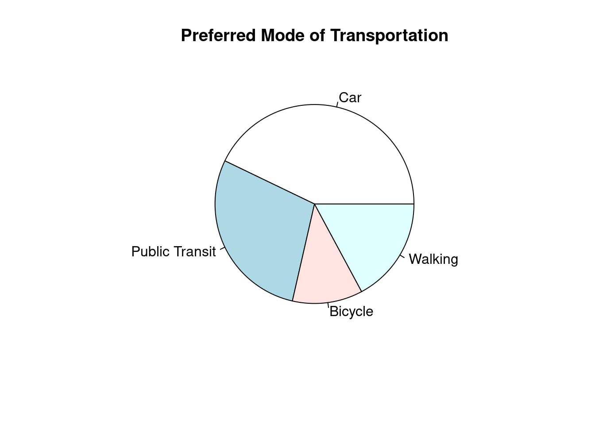
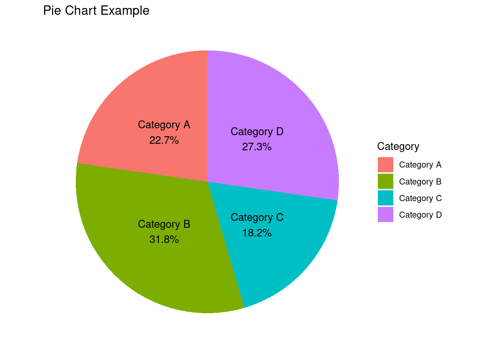
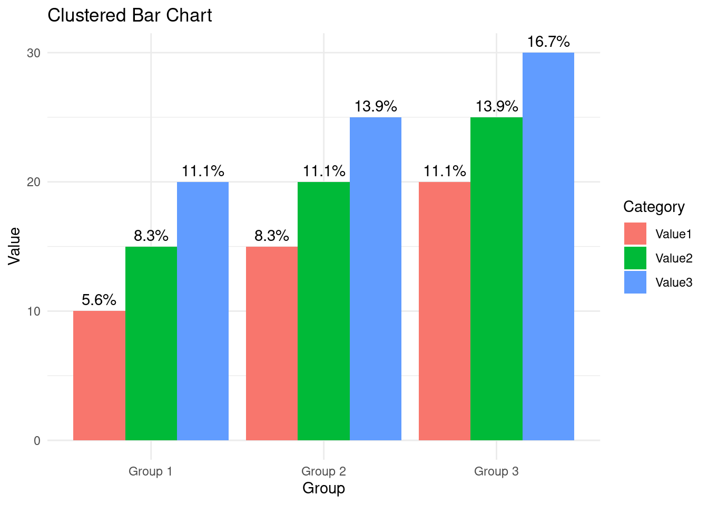
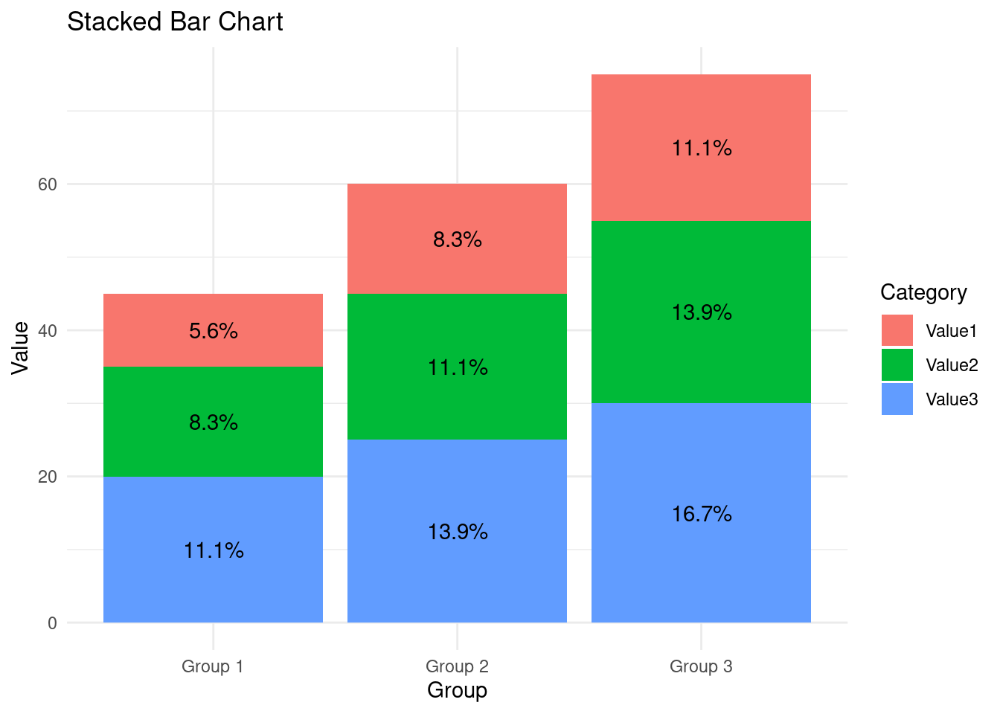
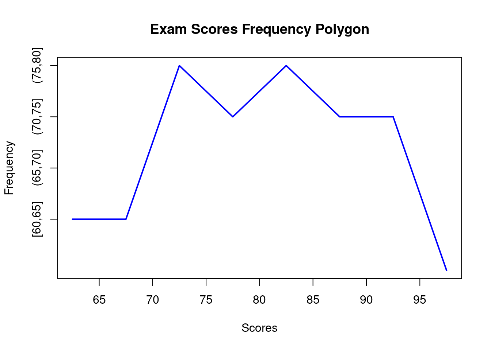
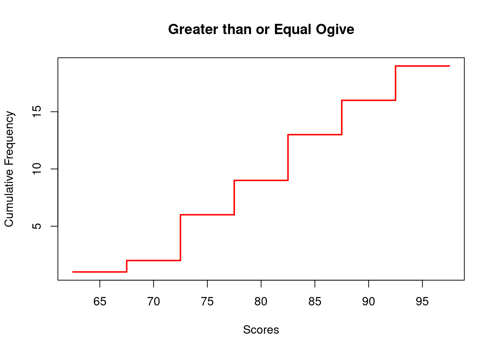
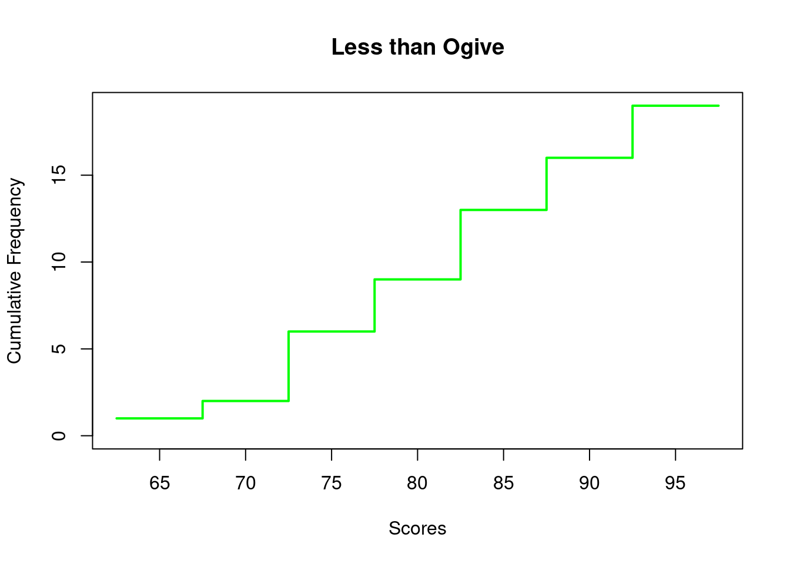

Data organization is a crucial step in the data analysis process. It involves structuring and arranging data in a meaningful way to facilitate analysis and interpretation.
2.2 Importance of Effective Data Presentation
Effective data presentation is essential for conveying insights and findings to stakeholders. Well-organized and visually appealing presentations can enhance understanding and decision-making.
To elaborate on each outline section separately in R Quarto document format, we’ll break down each section, provide explanations, examples, and R code to display relevant charts or tables. Let’s start with the first section:
2.3 Data Types and Formats
2.3.1 Introduction to Data Types
Data types categorize the nature of the data we work with, defining how we interpret and analyze it.
Examples: - Categorical Data: Gender (Male/Female), Marital Status (Single/Married/Divorced), Product Categories (Electronics/Clothing/Groceries). - Numerical Data: Age (continuous), Income (continuous), Number of Children (discrete).
2.3.2 Data Formats
Data formats refer to the structure or arrangement of data, distinguishing between raw, summary, and aggregated data.
Examples: - Raw Data: Individual survey responses, transaction records. - Summary Data: Mean income by age group, median household size by region. - Aggregated Data: Total sales revenue by product category, average customer satisfaction score by month.
2.3.3 R Code to Display Examples:
# Example of categorical datagender <-c("Male", "Female", "Male", "Male", "Female")table(gender)
gender
Female Male
2 3
# Example of numerical dataage <-c(25, 30, 35, 40, 45)summary(age)
Min. 1st Qu. Median Mean 3rd Qu. Max.
25 30 35 35 40 45
This R code demonstrates how to display tables summarizing categorical and numerical data.
Next, we’ll continue with the next section:
2.4 Data Cleaning and Preprocessing
2.4.1 Importance of Data Cleaning
Data cleaning involves identifying and correcting errors or inconsistencies in the dataset to ensure its accuracy and reliability.
Example: - Handling missing values: Replace missing values with the mean or median, or remove incomplete records. - Outlier detection and treatment: Identify outliers using statistical methods (e.g., z-score) and decide whether to remove or adjust them.
2.4.2 Data Cleaning Techniques
Various techniques are available for data cleaning, addressing common issues such as missing values, outliers, and data inconsistencies.
This R code creates a hierarchical data structure using lists.
2.6 Graphical Method for Qualitative Data
In this section, we will explore various methods for presenting data effectively. From graphical representations to frequency distribution tables, we will cover a range of techniques to convey information clearly and intuitively.
Graphical representations are powerful tools for visualizing qualitative data. Let’s consider an example where we have survey data on the preferred mode of transportation for commuters. We’ll create a pie chart to visualize the distribution of responses.
# Sample datacommute_modes <-c("Car", "Public Transit", "Bicycle", "Walking")responses <-c(75, 50, 20, 30)# Create a pie chartpie(responses, labels = commute_modes, main ="Preferred Mode of Transportation")

2.6.1 Frequency Distribution Table
Frequency distribution tables provide a systematic summary of the frequencies or counts of different categories within a dataset. Let’s create a frequency distribution table for a set of exam scores.
# Sample datascores <-c(75, 80, 85, 90, 95, 80, 85, 90, 85, 90, 95, 100)# Create a frequency tabletable(scores)
scores
75 80 85 90 95 100
1 2 3 3 2 1
2.6.2 Pie Chart
Pie charts are useful for illustrating the relative proportions of different categories within a dataset. Let’s use the same survey data on commuting preferences to create a pie chart.
# Load the ggplot2 packagelibrary(ggplot2)# Sample datadata <-data.frame(Category =c("Category A", "Category B", "Category C", "Category D"),Value =c(25, 35, 20, 30))# Calculate percentagesdata$Percentage <-round((data$Value /sum(data$Value)) *100, 1)# Create pie chartpie_chart <-ggplot(data, aes(x ="", y = Value, fill = Category)) +geom_bar(stat ="identity", width =1) +coord_polar("y") +# Convert to polar coordinates (pie chart)labs(title ="Pie Chart Example") +theme_void() +# Remove background and grid linesgeom_text(aes(label =paste0(Category, "\n", Percentage, "%")), position =position_stack(vjust =0.5))# Display pie chartprint(pie_chart)

Explanation:
We begin by loading the ggplot2 package.
Next, we create a dataframe called data containing the categories (Category A, B, C, D) and their corresponding values.
Using ggplot(), we specify the data and aesthetics. We set x to an empty string to create a single pie chart and y to the ‘Value’ column. We fill each category with a different color.
geom_bar() with stat = "identity" is used to create the pie chart. The width = 1 argument ensures that each segment extends fully around the center.
coord_polar(“y”) converts the plot into a polar coordinate system, resulting in a pie chart.
labs() is used to set the title of the chart.
theme_void() removes the background and grid lines, leaving only the pie chart.
Running this code will generate a simple pie chart using ggplot2. You can customize it further by adjusting labels, colors, and other aesthetics according to your preferences and data.
2.6.3 Bar Chart (Simple, Cluster, Stacked)
Bar charts are effective for comparing the frequencies or counts of different categories across a dataset. We’ll create simple, cluster, and stacked bar charts for the exam scores dataset.
# Load the ggplot2 packagelibrary(ggplot2)# Sample datadata <-data.frame(Group =c("Group 1", "Group 2", "Group 3"),Value1 =c(10, 15, 20),Value2 =c(15, 20, 25),Value3 =c(20, 25, 30))# Reshape data for clustered and stacked bar chartsdata_long <- tidyr::gather(data, key ="Category", value ="Value", -Group)# Calculate percentagesdata_long$Percentage <-round((data_long$Value /sum(data_long$Value)) *100, 1)# Simple Bar Chartsimple_bar <-ggplot(data_long, aes(x = Group, y = Value, fill = Category)) +geom_bar(stat ="identity") +labs(title ="Simple Bar Chart", x ="Group", y ="Value") +theme_minimal() +geom_text(aes(label =paste0(Percentage, "%")), position =position_stack(vjust =0.5))# Clustered Bar Chartclustered_bar <-ggplot(data_long, aes(x = Group, y = Value, fill = Category)) +geom_bar(stat ="identity", position ="dodge") +labs(title ="Clustered Bar Chart", x ="Group", y ="Value") +theme_minimal() +geom_text(aes(label =paste0(Percentage, "%")), position =position_dodge(width =0.9), vjust =-0.5)# Stacked Bar Chartstacked_bar <-ggplot(data_long, aes(x = Group, y = Value, fill = Category)) +geom_bar(stat ="identity", position ="stack") +labs(title ="Stacked Bar Chart", x ="Group", y ="Value") +theme_minimal() +geom_text(aes(label =paste0(Percentage, "%")), position =position_stack(vjust =0.5))# Display the plotsprint(simple_bar)
print(clustered_bar)

print(stacked_bar)

Explanation:
We start by loading the ggplot2 package.
We create a dataframe called data containing groups (Group 1, 2, 3) and their corresponding values (Value1, Value2, Value3).
We reshape the data into long format using the gather() function from the tidyr package to prepare it for plotting clustered and stacked bar charts.
For each type of bar chart:
We use ggplot() to specify the data and aesthetics.
We use geom_bar() with stat = "identity" to create the bars. We specify the position parameter as “identity” for the simple bar chart, “dodge” for the clustered bar chart, and “stack” for the stacked bar chart.
We add labels and titles using labs() to provide context to the plot.
We use theme_minimal() to set a minimal theme for the plot.
Finally, we print each plot to display them.
Running this code will generate a simple, clustered, and stacked bar chart using ggplot2, each showing different ways of visualizing the same data. You can customize the appearance of the plots further by adjusting colors, labels, and other aesthetics as needed.
2.6.4 Cross Tabulation
Cross-tabulation, also known as contingency tables, is a method for summarizing the relationship between two categorical variables. Let’s create a cross-tabulation table for the survey data on commuting preferences and gender.
commute_modes
gender Bicycle Car Public Transit Walking
Female 1 0 1 0
Male 0 2 0 1
In this section, we explored various methods for presenting data effectively, including graphical representations, frequency distribution tables, pie charts, bar charts, and cross-tabulation tables. Each method offers unique insights into the data and helps convey information clearly to the audience. By utilizing these techniques, researchers and analysts can communicate their findings in a compelling and informative manner.
2.7 Graphical Methods for Quantitative
In this section, we will explore various graphical methods for presenting quantitative data effectively. We will cover frequency distribution tables, stem-and-leaf plots, histograms, frequency polygons, and ogives. Each method offers unique insights into the distribution and characteristics of quantitative data. We will provide examples for each display along with R code to create them.
2.7.1 Frequency Distribution Table
A frequency distribution table summarizes the distribution of quantitative data into intervals or classes along with their corresponding frequencies. It is normally called as grouped dataset. It provides a concise summary of the data’s distribution, making it easier to identify patterns and trends.
2.7.1.1 Example:
Suppose we have a dataset of exam scores for a class of students. We can create a frequency distribution table to summarize the scores into intervals and their respective frequencies.
# Sample dataset of exam scoresscores <-c(65, 72, 78, 83, 90, 72, 85, 92, 68, 75, 80, 88, 93, 72, 82, 95, 78, 85, 90)# Create frequency distribution tablefreq_table <-table(cut(scores, breaks =seq(60, 100, by =5), include.lowest =TRUE))# Transpose the frequency distribution tabletransposed_freq_table <-as.data.frame(t(freq_table))# Rename the columnscolnames(transposed_freq_table) <-c("Class", "Class_Interval", "Frequency")# Print the transposed frequency distribution tableprint(transposed_freq_table)
Class Class_Interval Frequency
1 A [60,65] 1
2 A (65,70] 1
3 A (70,75] 4
4 A (75,80] 3
5 A (80,85] 4
6 A (85,90] 3
7 A (90,95] 3
8 A (95,100] 0
To create a frequency distribution table for a grouped dataset with both class limits and class boundaries, you can follow these steps:
Determine the class intervals for your grouped dataset.
Calculate the class limits and class boundaries for each class interval.
Calculate the frequency of data points falling within each class interval.
Create a table to display the class intervals, class limits, class boundaries, and frequencies.
The following example illustrate the steps mentioned above.
2.7.2 Stem and Leaf Plot
A stem-and-leaf plot provides a visual representation of the distribution of quantitative data. It organizes the data by separating the leading digit (stem) from the trailing digit (leaf) to display individual data points.
Important
It is crucial to determine the location for the cutoff to separate the digits into stem and leaf. The ideal guideline is the stem list should be between 5 to 15. If for the situation after the cutoff location, it leaves more than one digit after the cutoff location, just take the immediate digit after the cutoff as the leaf value.
For example, consider the value 1368. Suppose the cutoff is between 3 and 6, i.e., 13|68. Thus, stem = 13 and leaf = 6.
2.7.2.1 Example:
Using the same dataset of exam scores, we can create a stem-and-leaf plot to visualize the distribution of scores.
# Create stem-and-leaf plotstem(scores)
The decimal point is 1 digit(s) to the right of the |
6 | 58
7 | 222588
8 | 023558
9 | 00235
2.7.3 Histogram
A histogram is a graphical representation of the frequency distribution of quantitative data. It consists of bars where the height represents the frequency of observations within each interval or class.
2.7.3.1 Example:
Let’s create a histogram for the exam scores dataset to visualize the distribution of scores.
# Create histogramhist(scores, breaks =seq(60, 100, by =5), main ="Exam Scores Histogram", xlab ="Scores", ylab ="Frequency")
2.7.4 Frequency Polygon
A frequency polygon is a line graph that displays the frequencies of quantitative data plotted against the midpoints of the intervals or classes.
2.7.4.1 Example:
We can create a frequency polygon using the exam scores dataset to show the distribution of scores.
# Create frequency polygonmidpoints <-seq(62.5, 97.5, by =5)plot(midpoints, freq_table, type ="l", col ="blue", lwd =2, main ="Exam Scores Frequency Polygon", xlab ="Scores", ylab ="Frequency")

2.7.5 Ogive
An ogive, also known as a cumulative frequency curve, represents the cumulative frequencies of quantitative data. It can be used to analyze the cumulative distribution of data and calculate percentiles.
2.7.5.1 Example:
We will create both greater than or equal ogive and less than ogive using the exam scores dataset.
# Calculate cumulative frequenciescum_freq <-cumsum(freq_table)# Greater than or equal ogiveplot(midpoints, cum_freq, type ="s", col ="red", lwd =2, main ="Greater than or Equal Ogive", xlab ="Scores", ylab ="Cumulative Frequency")

# Less than ogiveplot(midpoints, cum_freq, type ="s", col ="green", lwd =2, main ="Less than Ogive", xlab ="Scores", ylab ="Cumulative Frequency", ylim =c(0, max(cum_freq)))

In this section, we have explored various graphical methods for presenting quantitative data, including frequency distribution tables, stem-and-leaf plots, histograms, frequency polygons, and ogives. These visualizations help us understand the distribution and characteristics of quantitative data effectively.